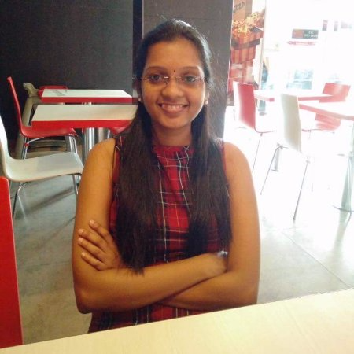
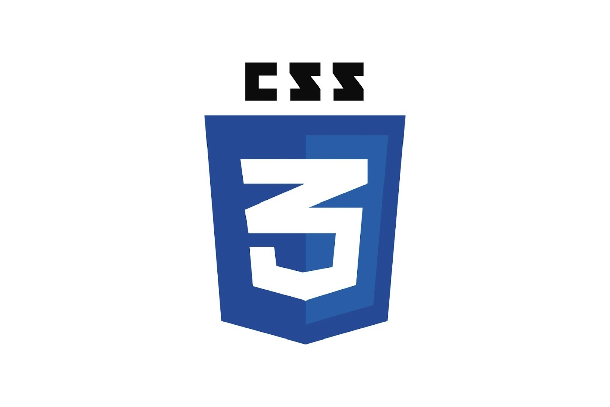
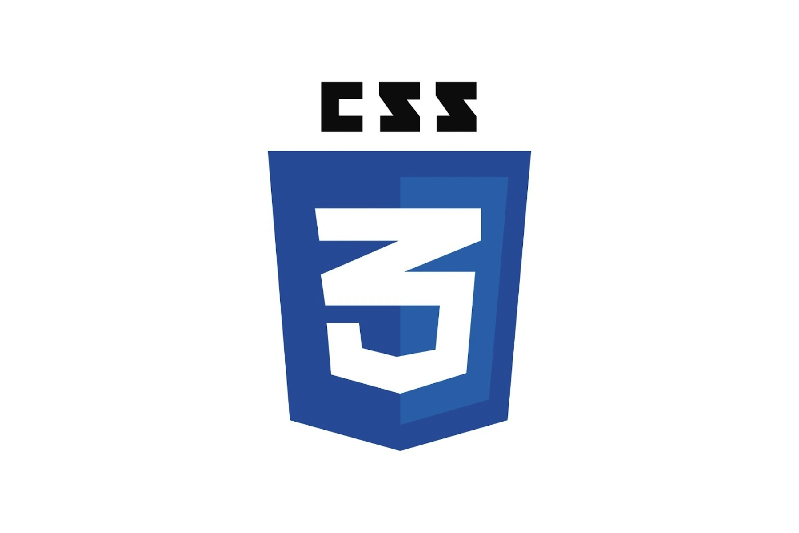
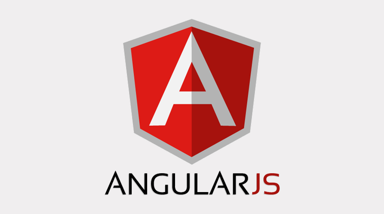
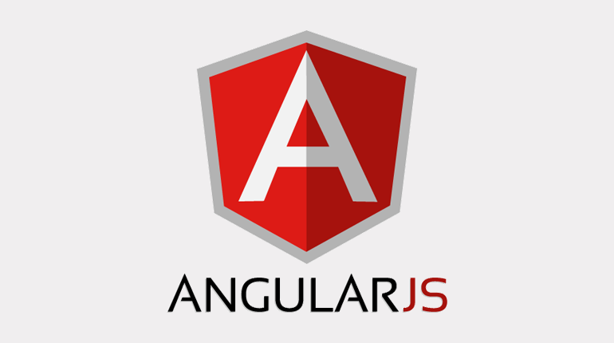
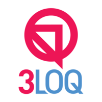

Satya Mounika
About me
Hi there! This is Satya Mounika. I'm a programming enthusiast aspiring to become a Full Stack Developer. I have the zeal to learn different programming languages, where I can put my creative abilities and logical thinking to use. As the technologies keep changing it creates a challenging environment, which is something that I love to overcome continually.
My aim is to create websites that are hassle-free, approachable and easy on the eyes for the users. As of now, I expertise with these particular languages namely: HTML5, CSS3, Javascript and also a couple of frameworks namely, AngularJS and Bootstrap. I'm looking forward to learn ReactJS, Node.js, Nginx, Jquery, MongoDB and REST APIs as I feel these would give a real boost in the world of software development.
Apart from my professional aspirations, I'm a foodie who indulges in travel for food to different places and taste various cuisines and review them on a social platform like Zomato. My other hobbies include Pencil-Art and reading novels of multiple genre.
Skills
 

 


Work Experience
Bitkemy Ventures
Designation: Associate Software Engineer
Period: June 2017- December 2017

3LOQ Labs
Designation: Junior Business Analyst
Period: October 2015 - May 2017
3LOQ Labs
Designation: Junior Business Analyst
Period: October 2015 - May 2017
Project
Client: PARAS
A web application product for this financial institution has been developed to keep a track of the distressed assets. The multitude of my responsibilities are listed below:
- Develop UI/front-end for highly scalable enterprise web applications.
- Creating new service prototypes and demonstrator applications.
- Independently develop the modules or tasks assigned.
- Follow the architectural guidelines and standards of design and coding to produce quality deliverables.
- Implement the best-practices in design and coding while inculcating them with my colleagues.
- Work with other development team members while helping them implement the designs, including reviews of the codes and their design as well.
- Optimize application for maximumefficiency, speed and accuracy at every level of operation.
Portfolio: I've created a simple portfolio that gives detailed description about me and my professional work as a software developer.The website is created using HTML5 and CSS3. The link below would redirect you to the website.